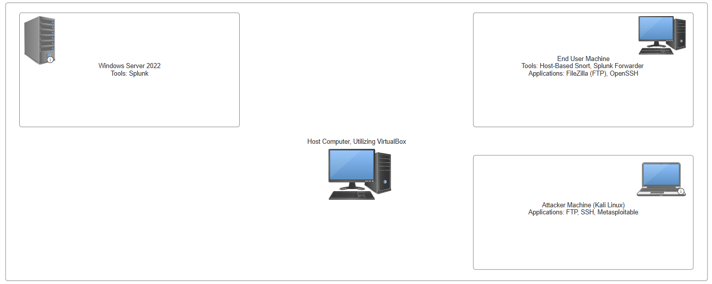

Capstone Project
Intrusion Detection with Snort and SIEM
Overview
Designed and implemented an intrusion detection system using Snort and Splunk to monitor network traffic, detect suspicious activity, and visualize security events. For this capstone project, proper documentation, testing, and collaboration were critical throughout the process.Project Role
Preston C. | Project Manager & Technical Contributor
Worked on the planning, documentation, and technical implementation of an intrusion detection system using Snort and Splunk. Managed project documentation, coordinated team meetings, and helped maintain project requirements and deliverables. Contributed to the technical setup and configuration of the virtual environment, including VM deployment, RDP configuration, Snort rule tuning, and Splunk integration for security event monitoring and analysis.
Technologies Used
- Operating Systems: Windows 10, Windows Server 2022, Kali Linux
- Security: Snort (IDS), Splunk (SIEM)
- Virtualization: VirtualBox
- Networking: TCP/IP, FTP
Architecture Diagram
The following diagram illustrates the architecture of the intrusion detection system:

Project Documentation
The following documents provide additional detail about the project, including design, implementation, testing, configuration, and overall functionality.
Additional Resources: